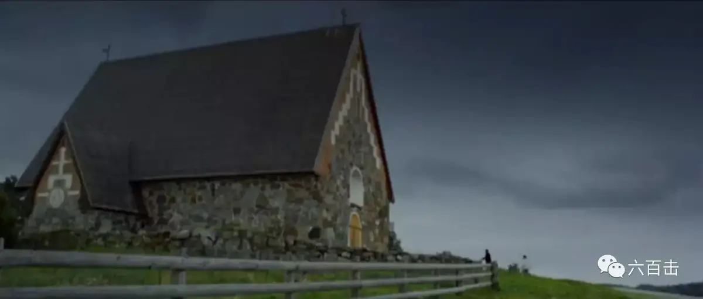
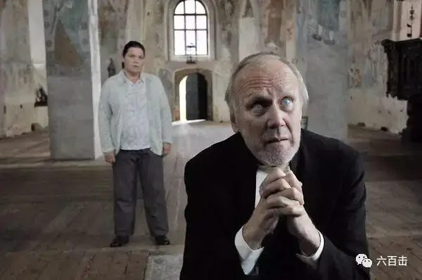

不多说 直接感受
芬兰新生代导演克劳斯·哈洛33岁时获得英格玛伯格曼奖，获得大师钦点后，被视为北欧下一个电影大师，一直备受嘱目。在之后的一次访谈中，克劳斯表示“过去我不是一个基督徒，但现在是”，克劳斯想用温暖诚挚的态度拍一部以信仰为主题的电影。以一般人为主角，阐述每个人都需要仁慈与宽容去看待他人生活中的缺点；也描写希望和对生命的尊重。于是就有了这部沉静的艺术片《致雅各布神父的信》，本片在2009年上映，正值金融危机，很多人失去了工作，生活骤然改变，本片的主旨直击人心，上映期长达34周，刷新纪录，总票房更超越了《变型金刚2》，本片获得芬兰奥斯卡Jussi Awards最佳男主角奖、最佳影片、最佳导演及最佳音乐四项大奖肯定。
这是一部简洁的北欧电影，考究的摄影，安静流淌的钢琴曲，美丽的北欧风光，北欧式的温情，这些都构成了这部电影形式上的魅力。电影只有蕾拉、雅各布以及送信快递员三个人物，场景也只有两个，幽静的雅各布神父居所及美丽但空荡的教堂，剧情非常简单，讲述了被保释出狱的杀人犯蕾拉与雅各布神父之间的故事。但却谈及了救赎，讲述了人生的真相、困苦，并且不可思议的探到了人性脆弱的的角落。
蕾拉因为杀死了自己的姐夫而落狱，从此选择自我封闭，杜绝一切来信和探访，将自己完全封闭起来。但是幽默的是，她被保释出狱做了雅各布神父的助手，而雅各布神父是一位盲人，所以她的工作是帮雅各布读信和回信，她不愿意敞开，却不得不每天面对别人的敞开，这让蕾拉非常厌烦，以至于蕾拉丢掉雅各布神父的来信并恐吓邮差。伴随着简单动人的钢琴音乐，在美丽的风景中，克劳斯用了一半的篇幅刻画了两人的相遇以及互相隔阂的状态。
故事矛盾的高潮出现在教堂，雅各布神父误以为教堂有婚礼，在空空无人的教会中自己举行证婚仪式，蕾拉却过来告诉神父，“你要搞清楚，是你自己的幻想”，面对神父软弱的祷告，蕾拉不屑的说“祷告不出来，那就不要祷告了”，她让雅各布感到深深的被遗弃和无力。蕾拉认为神父将自己保释出来，只是为了满足自己的道德，而她自己并不是哪些需要帮助的人。

于是蕾拉将神父丢下，冲回住所，打包行李要离开这里，但是当她坐在出租车上，司机问她去哪里的时候？她蒙了，她也不知道自己去哪里，这也让蕾拉陷入绝望，并回屋准备上吊自杀。此时两人都处于脆弱的边缘，但是救赎也从这个时候开始了。
被雨水淋醒的神父，回到家里，救下了正在上吊的蕾拉，而蕾拉也开始慢慢的关心起这位脆弱的盲神父，回到家中的神父陷入到深深的痛苦中，他反复念到“我若将所有的周济穷人，又舍己身叫人焚烧，却没有爱，仍然与我无益”。没有收到来信的神父被孤独笼罩，他也陷入到怀疑之中——不是别人需要我的帮助，是我需要别人的求助，自己心理根本没有对于别人的爱。但即使是如此软弱，雅各布还是选择信靠，他宁愿承认自己不被人需要，也坚信上帝不会不被人需要。而故事的高潮来自于蕾拉的敞开，为了安慰神父，她自己编造来信，被识穿后，她讲出了自己的故事：她自己从小受到家暴，一直被姐姐保护，而姐姐成家后，却被姐夫家暴，忍无可忍，她把姐夫杀了，她认为她毁掉了姐姐的幸福，她无法原谅自己，也坚信姐姐也无法原谅自己。

雅各布面对蕾拉的敞开，他激动不已，不禁惊叹“在人不能的，在神可以”，雅各布开心的将蕾拉姐姐一直寄给他的信拿给了蕾拉，原来，姐姐早已经原谅了她，只是蕾拉一直拒绝姐姐的探访和来信。在明媚的风景之下，那个对信仰和服侍充满信心的雅各布复活了，而看到信后泪流满面的蕾拉也最终原谅了自己。
这个故事透过一个被判无期徒刑的女人和一个盲眼神父的相处过程，用审慎的态度和些许的幽默刻画熟悉的基督教信仰——日常生活中拥有可以转变人心的力量，软弱在哪里，恩典就在哪里。成长于我们文化处境之下的人很难去真正正确对待自己的软弱，要不用阿q式的戏谑将自己的软弱和谐掉，要不膨胀自己的心态去忽视自己的软弱，然后告诉自己要永远向前看，但这都会让我们对自己和他人的脆弱变得麻木和冷漠。也许我们应给学会像雅各布和蕾拉那样选择信靠和敞开，因为在那里，我们会找到活水的源头和生命的真正盼望。
关注并回复：
《致雅各布神父的信》获取电影资源